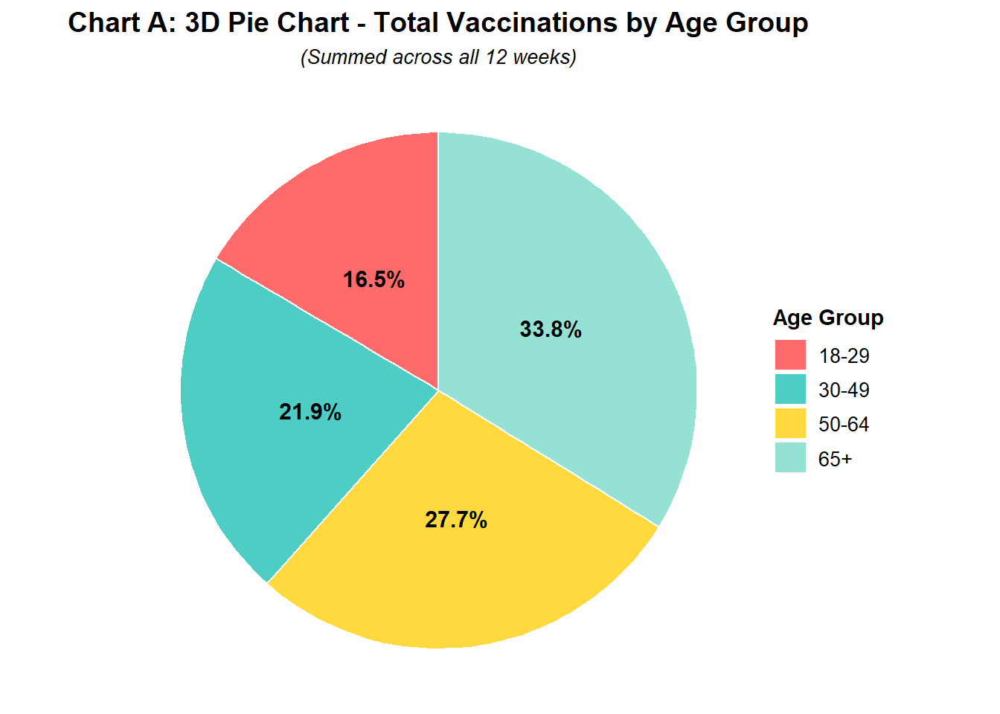
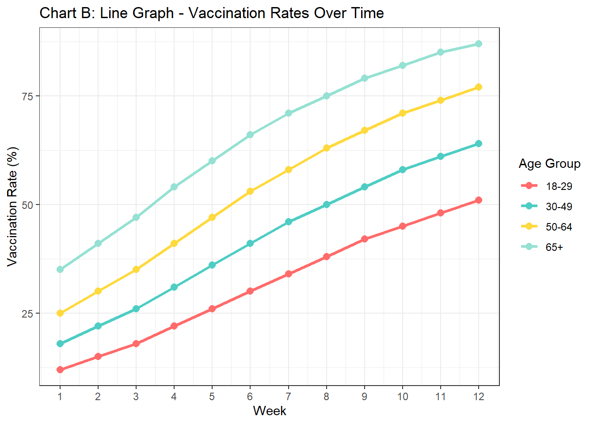
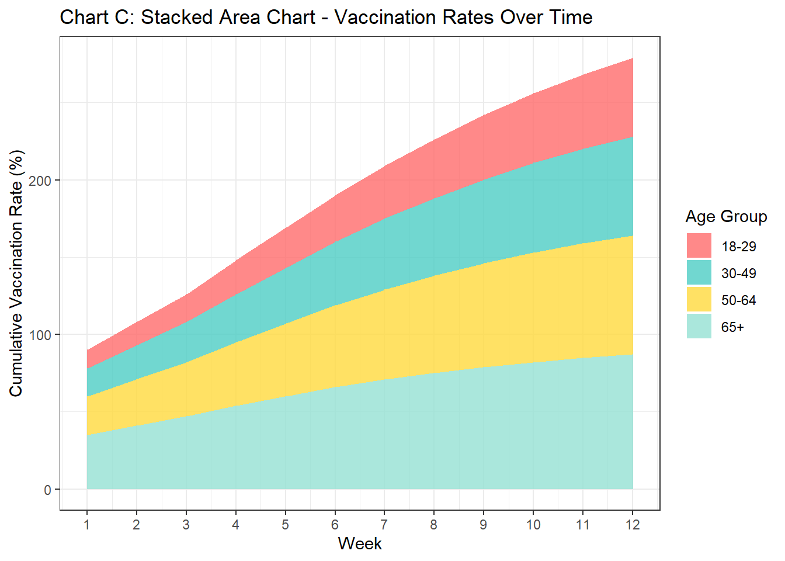
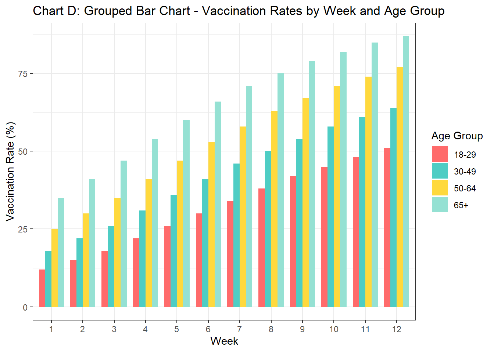
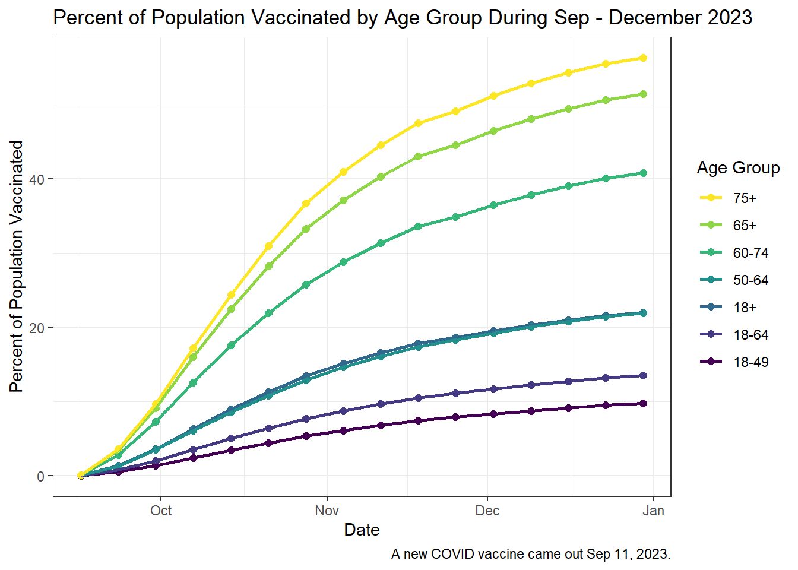

You can see the purpose of this assignment as well as the skills and knowledge you should be using and acquiring, in the Transparency in Learning and Teaching (TILT) document in this repository. The TILT document also contains a checklist for self-reflection that will provide some guidance on how the assignment will be graded.
# Load required librariessuppressPackageStartupMessages({library(ggplot2)theme_set(theme_bw())library(dplyr)library(tidyr)})# Create sample datasetset.seed(123)weeks <-1:12age_groups <-c("18-29", "30-49", "50-64", "65+")# Generate vaccination rate data with realistic patternsvaccination_data <-data.frame(week =rep(weeks, each =4),age_group =rep(age_groups, times =12),vaccination_rate =c(# Week-by-week data for each age group12, 18, 25, 35, # Week 115, 22, 30, 41, # Week 218, 26, 35, 47, # Week 322, 31, 41, 54, # Week 426, 36, 47, 60, # Week 530, 41, 53, 66, # Week 634, 46, 58, 71, # Week 738, 50, 63, 75, # Week 842, 54, 67, 79, # Week 945, 58, 71, 82, # Week 1048, 61, 74, 85, # Week 1151, 64, 77, 87# Week 12 ))# Set factor levels for consistent orderingvaccination_data$age_group <-factor(vaccination_data$age_group, levels =c("18-29", "30-49", "50-64", "65+"))# Define color paletteage_colors <-c("18-29"="#FF6B6B", "30-49"="#4ECDC4", "50-64"="#FFD93D", "65+"="#95E1D3")# CHART A: 3D Pie Chart (showing total vaccinations by age group)# Calculate total vaccinations per age group (sum across weeks)total_by_age <- vaccination_data %>%group_by(age_group) %>%summarise(total =sum(vaccination_rate))# Create pie chart with 3D-like appearance using custom positioningchart_a <-ggplot(total_by_age, aes(x ="", y = total, fill = age_group)) +geom_bar(stat ="identity", width =1, color ="white") +coord_polar("y", start =0) +scale_fill_manual(values = age_colors) +labs(title ="Chart A: 3D Pie Chart - Total Vaccinations by Age Group",subtitle ="(Summed across all 12 weeks)",fill ="Age Group") +theme_void() +theme(plot.title =element_text(hjust =0.5, size =14, face ="bold"),plot.subtitle =element_text(hjust =0.5, size =10, face ="italic"),legend.position ="right",legend.title =element_text(size =11, face ="bold"),legend.text =element_text(size =10) ) +# Add percentage labelsgeom_text(aes(label =paste0(round(total/sum(total)*100, 1), "%")),position =position_stack(vjust =0.5),size =4, fontface ="bold")# CHART B: Line Graph - Vaccination Rates Over Timechart_b <-ggplot(vaccination_data, aes(x = week, y = vaccination_rate, color = age_group, group = age_group)) +geom_line(linewidth =1.2) +geom_point(size =2.5) +scale_color_manual(values = age_colors) +scale_x_continuous(breaks =1:12) +labs(title ="Chart B: Line Graph - Vaccination Rates Over Time",x ="Week",y ="Vaccination Rate (%)",color ="Age Group")# CHART C: Stacked Area Chart - Vaccination Rates Over Timechart_c <-ggplot(vaccination_data, aes(x = week, y = vaccination_rate, fill = age_group)) +geom_area(alpha =0.8, position ="stack") +scale_fill_manual(values = age_colors) +scale_x_continuous(breaks =1:12) +labs(title ="Chart C: Stacked Area Chart - Vaccination Rates Over Time",x ="Week",y ="Cumulative Vaccination Rate (%)",fill ="Age Group")# CHART D: Grouped Bar Chart - Vaccination Rates by Week and Age Groupchart_d <-ggplot(vaccination_data, aes(x =factor(week), y = vaccination_rate, fill = age_group)) +geom_bar(stat ="identity", position ="dodge", width =0.8) +scale_fill_manual(values = age_colors) +labs(title ="Chart D: Grouped Bar Chart - Vaccination Rates by Week and Age Group",x ="Week",y ="Vaccination Rate (%)",fill ="Age Group")chart_achart_bchart_cchart_d

(a) This a pie chart displaying COVID vaccination rates by age group.

(b) This is line chart which diplays COVID vaccination rates are diplayed over a 12 week period.

(c) This figure is a stacked chart, descrbing vaccination rates over time and sorted by age group, which is the color mapping

(d) This figure is a bar chart which diplays COVID vaccination rates are diplayed over a 12 week period.
Figure 1: Four different representations of COVID vaccination rates.
Edit the chunk options above to produce helpful and descriptive captions and alt-text for each chart. Every chart you include in a document should be referenced in the text (preferably using a cross-reference) and should have a helpful caption and include at least short alt-text descriptions using the fig-alt quarto option.
Resources:
Image Accessibility Generator - This is a great tool but I often have to customize the output. I usually use the long text for image descriptions, which is not best practice but tends to work better than many of the other options available within the quarto ecosystem.
Using the grammar of graphics, identify the geom, mappings, stat, positions, coordinate systems, and transformations for each graphic. Fill in the table below accordingly, leaving any cells which do not apply to the chart blank. If a mapping is a function of a statistic, fill in the statistic function from ggplot2 and indicate the mapping using the appropriate after_stat variable.
Grammar of graphics mappings for the four charts
Chart
Geom
X mapping
Y mapping
Color mapping
Fill mapping
Stat
Position
Coord System
Transform
A
Bar
nothing
total vaccinations
age group
identity
polar
B
point,line
weeks
vaccination rates
age group
cartesian
C
area
week
vaccination rates
age group
stack
cartesian
D
bar
week
vaccination rates
age group
identity
dodge
cartesian
Examine each chart and determine whether it effectively communicates changes in vaccine rates over time across different age groups. If the chart is inappropriate for that comparison, explain why; if it is appropriate but not optimal, explain what you would change.
This does not show the time variable at all so that is inappropriate.
This graph does show the relationship between vaccination rate, time, and age group. When looking at this graph you are able to see that changes over time that take place
This graph does a bad job of showing the changes over time is show a cumulative percentage on the y axis which does not allow you easily distinguish between the contribution between the age groups.
The bar graph does a great job of the showing the relationship between our variables. The relationship however is not as noticeable as the line graph.
Examine each chart and critique the use of Gestalt principles of grouping. What principles apply? Are they used effectively?
The coloring of the age groups I believe is misleading as the blues are to similar and I find myself associating them with each other. The principle of similarity applies here and it shows how easily things can be associated with each other.
The coloring of the age groups I believe is misleading as the blues are to similar and I find myself associating them with each other. The principle of similarity applies here and it shows how easily things can be associated with each other.
The coloring of the age groups I believe is misleading as the blues are to similar and I find myself associating them with each other. The principle of similarity applies here and it shows how easily things can be associated with each other.
The coloring of the age groups I believe is misleading as the blues are to similar and I find myself associating them with each other. The principle of proximity applies here and it shows how easily things can be associated with each other. The principle of continuity also applies to this graph as we want to connect the bars and and form them into a line.
Consider the “messages” you might want viewers to take away from this data and the visuals you generate.
Brainstorm 2-3 reasonable messages
The message that I would want viewers to take away is that the older generation had the highest vaccination rates. That vaccination rates rose over time. That age is related to vaccination rate.
What do you think the most important message is from this data set?
The most important message of this dataset is how age relates to vaccination rates.
Which comparisons do you want to make easier for participants to perform?
I want them to easily be able to compare the vaccination rates of each group with out having the visual miscues of the current coloring
What obstacles do you expect to encounter designing a chart to facilitate these comparisons?
I think that choosing proper coloring will be an issue and formatting the lines properly.
Considering your answers to the questions above, create your own version of the chart that minimizes cognitive load and maximizes the ability to interpret. Explain the changes that you made and why they improve the chart compared to the ones generated by Claude.
library(viridis)
Loading required package: viridisLite
new_chart<-ggplot(vaccination_data, aes(x = week, y = vaccination_rate, color = age_group, group = age_group)) +geom_line(linewidth =1.2) +geom_point(size =2.5) +scale_color_viridis(discrete =TRUE, option ="D") +labs(title ="Vaccination Rates Over Time by Age Group",x ="Week",y ="Vaccination Rate (%)",color ="Age Group") +guides(color =guide_legend(reverse =TRUE)) +scale_x_continuous(breaks =1:12)+scale_y_continuous(breaks =seq(0, 100, by =10),limits =c(0,100))new_chart
CodeCode
Figure 2: Line Graph with COVID Vaccination Rates Updated
2 Choose Your Own Adventure
Claude used fake data, but we have access to the real deal, and I’ve downloaded a csv to simplify the process.
Of course, the CDC only tracks number of vaccines, not the overall vaccination rate.
Augment this data with census estimates of the population size for each age group. In either case, you may need to do a bit of inference/subtraction to get the counts for the age brackets used by the CDC. Provide reproducible code that generates a population table for 2023 and 2024 with the appropriate counts for each age bracket provided by the CDC.
Options:
Use the Census QuickFacts page https://www.census.gov/quickfacts/
Rows: 1680 Columns: 13
── Column specification ────────────────────────────────────────────────────────
Delimiter: ","
chr (6): COVID-19_Season, Week_ID, Current_Season_Week_Ending_Label, Setting...
dbl (4): MMWR_Week_Order, MMWR_Week, MMWR_Day, Location_and_Flu_Season_Order
num (3): MMWR_Year, Doses, Cumulative_Doses
ℹ Use `spec()` to retrieve the full column specification for this data.
ℹ Specify the column types or set `show_col_types = FALSE` to quiet this message.
Warning: Values from `...11`, `...14`, `...17`, `...5` and `...8` are not uniquely
identified; output will contain list-cols.
• Use `values_fn = list` to suppress this warning.
• Use `values_fn = {summary_fun}` to summarise duplicates.
• Use the following dplyr code to identify duplicates.
{data} |>
dplyr::summarise(n = dplyr::n(), .by = c(`table with row headers in column A
and column headers in rows 3 through 4. (leading dots indicate sub-parts)`))
|>
dplyr::filter(n > 1L)
trans <-t(age_data)rownames(trans) <-NULLlibrary(janitor)
Attaching package: 'janitor'
The following objects are masked from 'package:stats':
chisq.test, fisher.test
Warning: Row 1 does not provide unique names. Consider running clean_names()
after row_to_names().
col <-data.frame(colnames(new_age))library(stringr)final_age <- new_age %>%mutate(across(-Year,as.numeric)) %>%group_by(Year) %>%summarise(`18+`=`.18 to 24 years`+`.25 to 44 years`+`.45 to 64 years`+`.65 years and over` ,`18-49`=`.18 to 24 years`+`.25 to 44 years`+`.45 to 49 years`,`18-64`=`.18 to 64 years`,`50-64`=`.60 to 64 years`+`.50 to 54 years`+`.55 to 59 years`,`60-74`=`.60 to 64 years`+`.65 to 69 years`+`.70 to 74 years`,`65+`=`.65 to 69 years`+`.70 to 74 years`+`.75 to 79 years`+`.80 to 84 years`+`.85 years and over`,`75+`=`.75 to 79 years`+`.80 to 84 years`+`.85 years and over` ) %>%filter(Year =="2023"| Year =="2024") %>%pivot_longer(cols =c(2:8),names_to ="Age_Group",values_to ="Population" )library(lubridate)real <- real_data %>%mutate(Year =as.character(MMWR_Year)) %>%filter(Year =="2023"| Year =="2024") %>%group_by(Week_ID,Age_Group,Year) %>%summarize(Total_Doses =sum(Cumulative_Doses))%>%mutate(Week_ID =ymd_hms(Week_ID)) %>%arrange(Week_ID)
`summarise()` has grouped output by 'Week_ID', 'Age_Group'. You can override
using the `.groups` argument.
Use the real data to generate the plot you created in 6. How does the real data change the appearance/message of the plot? Does anything get easier or more difficult?
total_per <- total_data %>%filter(Year =="2023") %>%mutate(percent =100*(Total_Doses/Population))ggplot(total_per,aes(x = Week_ID,y = percent,color = Age_Group)) +geom_point(size =2) +geom_line(linewidth =1) +labs(title ="Percent of Population Vaccinated by Age Group During Sep - December 2023",x ="Date",y ="Percent of Population Vaccinated",color ="Age Group",caption ="A new COVID vaccine came out Sep 11, 2023.") +scale_color_viridis(discrete =TRUE, option ="D") +guides(color =guide_legend(reverse =TRUE))

Figure 3: Line Graph Displaying COVID Vaccination Rates With Real Data
This data shows a more clear image of the fall - winter of 2023 and the cumulative percent of people who received the new vaccine. This is better than the previous graph as we have no true context in time for that data. I believe that this data is slightly easier to understand instead of a random 12 week period we know the dates and what vaccine the percentage is modeling.
What annotations would you want to add to your chart? You may be able to find relevant information about e.g. approval dates of vaccines at immunize.org’s Vaccine Timeline. Add at least one annotation to your chart, but balance utility with clutter.
The new vaccine was released in September ,11 2023. This was right before the date starts on the chart.
How would you modify this chart if your goal was to compare vaccination rates for each age group in 2023 and 2024? Explain your answer, highlighting how your modifications would reduce the cognitive load of making the comparison of interest.
I think one way of doing this would be to facet the graphs by year. This would give the viewer less things to look at in a single plot. Another thing that could be done it to increase the size of the age groups and take out unnecessary groups so that the viewer doesn’t have as much to look at.
How would you use your statistical training to test and visually highlight any statistically significant differences? Explain. You do not have to actually implement any statistical testing to answer this question.
I believe that running a t - test over the cumulative total at distinct time points would give us a good sense of if the age groups are statistically different at time throughout the year. I also think that going through and highlighting time points where age groups are a certain distance apart would be something that allows the reader to see how separate the groups are.